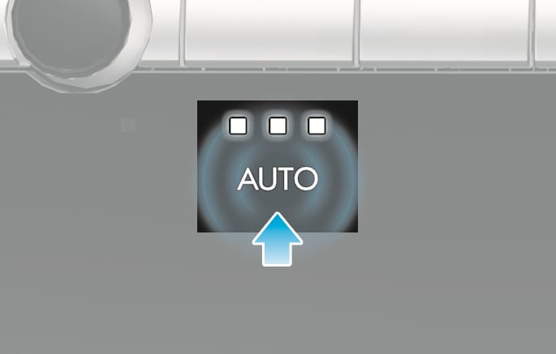
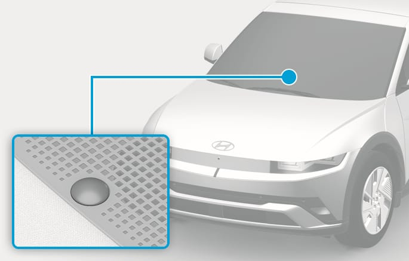

전자동(AUTO)으로 조절하기
-
시동을 건 상태에서 전자동 조절 버튼(AUTO)을 누르십시오.
-
버튼의 표시등이 켜지고 설정된 온도에 따라 온도가 자동으로 조절됩니다.
-
풍량(강/중/약)을 조절하려면 전자동 조절 버튼(AUTO)을 반복해서 누르십시오.

2C_AirconAutoButton
-
-
온도 조절 버튼을 눌러 원하는 온도를 설정하십시오.

2C_AirconTempButton
-
계절에 관계없이 차량 내부를 쾌적한 온도로 유지하려면 전자동 모드를 사용하는 것이 좋습니다.
-
권장 설정 온도는 22℃ 정도입니다.
-
대시보드 중앙의 일사량 감지 센서 위에 물건을 울려 두지 마십시오.

2C_BatterySaverIndicator
-
전자동(AUTO) 모드로 에어컨을 작동하면 감지된 일사량에 따라 차량 내부 온도를 조절합니다.
-
-
물건 등이 일사량 감지 센서를 가리면 내부 온도를 적절하게 조절하지 못할 수 있습니다.
-
풍량, 에어컨, 바람 방향, 앞유리 서리 제거 기능 버튼을 누르면 전자동 조절 버튼(AUTO)의 표시등이 꺼지지만 전자동 조절 상태가 유지되고, 별도로 설정한 기능만 사용자 설정에 따라 작동합니다.
-
기능 버튼을 다시 눌러 표시등이 꺼지면 전자동 선택 표시등이 켜집니다.